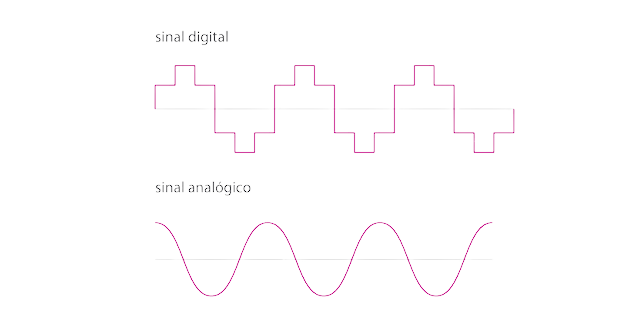

Como a Internet funciona
Tudo começa com um sinal
Você sabe que um computador é um equipamento eletrônico capaz de entender apenas um tipo de sinal, não sabe?
Tem gente que acha que um computador é um dispositivo super inteligente e cheio de capacidades de decidir nosso destino, mas na verdade ele é apenas uma máquina capaz de analisar sinais e fazer contas simples de uma maneira super rápida!
Eu sinto te informar, mas resumindo bastante aqui, o computador só é capaz de compreender duas coisas: 0 e 1.
Mas é claro que o que circula dentro do seu computador não são pequenos números, são ondas (sinais). No caso de equipamentos eletrônicos processados, as ondas se parecem com as representadas a seguir.
Como vimos na aula anterior, a Internet é uma rede gigantesca que interliga várias outras redes ao redor do mundo. E precisamos ter meios físicos para levar esses sinais de um lado para o outro.
E se nesse exato momento você está confuso(a) com esse conceito, saiba que a maioria das transmissões entre continentes não é realizada pelos Satélites, como a maioria das pessoas costuma pensar. Os satélites possuem uma limitação de tráfego e sofrem muito com interferências, e é por isso que os cabos de fibra ótica devem ser passados pelos oceanos. Um trabalho incalculável, mas necessário.
Mas não dá para esses cabos submarinos saírem pela praia e seguirem caminho até a sua casa, e por isso precisam se interligar a outros sistemas de comunicação. Alguns dos sistemas utilizados sempre foram a telefonia tradicional, os sistemas de TV a cabo, os sinais via satélite e até as simples redes de radiofrequência.
O problema é que os sistemas diferentes transmitem sinais em formatos diferentes, como você pode ver na imagem acima. Isso dificultaria a comunicação entre pontos, se não fosse um processo de “conversão”, mais conhecido como MODULAÇÃO.
De uma maneira bem resumida, modular é conseguir ler uma onda no formato A compatível com um tipo de sistema de comunicação e convertê-la para um formato B, compatível com outro tipo de sistema.
E é exatamente para isso que servem aqueles aparelhos que você instala em sua casa para começar a receber Internet doméstica
Uma das funções desse aparelho é MODULAR os sinais que saem e DEMODULAR os sinais que chegam. E é por isso que chamamos esse aparelho de MODEM.
Roteadores
As rotas são outro assunto muito importante para o funcionamento da Internet. Pense na rede como se fosse como se fosse um mapa com várias ruas, como no desenho a seguir. De quantas maneiras diferentes podemos chegar do ponto A até o ponto B? Eu imaginei três rotas diferentes e representei usando as linhas coloridas. Quem vai decidir a melhor rota é o Aplicativo de GPS, já que podem existir engarrafamentos e ruas fechadas.
Na Internet também é assim. Para enviar um sinal de um dispositivo A para um dispositivo B, podemos ter várias rotas. Quem vai definir a melhor rota são os ROTEADORES que compõem a rede. Os pacotes de dados podem chegar em seu computador por diversas rotas diferentes, tudo vai depender do tráfego no momento da transmissão.
Agora que você já sabe como funcionam as rotas, vamos falar sobre os pontos.
Cliente e Servidor
Volte e olhe aquele mapa de novo. Imagine que o ponto A é você na escola pedindo uma pizza. O ponto B é a pizzaria, que vai te fornecer o pedido que vai matar sua fome. Quando o pedido for confirmado, o motoboy que vai fazer a entrega é o pacote. Ele vai levar seu pedido até você por uma rota.
Nessa situação que descrevi acima, você no ponto A é o CLIENTE. A pizzaria no ponto B é o SERVIDOR. O motoboy é o PACOTE e sua pizza é o DADO. A Internet também vai funcionar dessa maneira.

Olhe agora o desenho ao lado. Ele é bem parecido com a história do mapa. Imagine que você está no seu celular tentando acessar um site. O seu celular é o CLIENTE e está pedindo algo pela Internet. Ao descobrir onde está o site, a máquina que está hospedando ele será o SERVIDOR, que vai fornecer os arquivos que compõem o site. O caminho que vai criar uma ligação entre o servidor e você (cliente) vai ser decidido pelos roteadores da Internet.
Um servidor pode estar no seu bairro, na sua cidade, no seu país ou até mesmo do outro lado do mundo. Os pacotes podem girar o mundo todo em poucos segundos e o resultado será exibido na tela do seu celular/computador como se fosse magia, mas é pura TECNOLOGIA!
Na Internet existem vários servidores:
- Servidor de site (também chamado de WebHost)
- Servidor de streaming
- Servidor de arquivos
- Servidor de e-mail
- E muito mais…
Mas como será que o mecanismo da Internet consegue descobrir o local exato de um site? Como ele descobre em que servidor ele está? E como ele consegue encontrar a posição exata do servidor no Globo? Aí entramos no próximo assunto.
Identificando os nós
Como vimos anteriormente, a Internet funciona baseada em um conjunto de protocolos chamado TCP/IP. Um protocolo garante que todas as comunicações seguirão um mesmo padrão, permitindo que dispositivos que são diferentes, com tecnologias completamente distintas, possam se trocar mensagens.
Uma das funções do TCP/IP, mais especificamente do IP, é identificar os nós. Mas o
que seria esse nó?
A resposta é simples: um nó é cada ponto que está conectado à rede. Quando você
“se conecta” à Internet, recebe uma identificação única. Essa identificação é um
ENDEREÇO IP.
Os IPs mais antigos (IPv4) usam 4 octetos, que são conjuntos de 8 bits separados por
pontos, totalizando 32 bits por identificador.
Ex: 123.45.67.89 = 01111011.00101101.01000011.01011001
Os IPs mais modernos (IPv6), usam 128 bits ao todo (o que é 4x mais bits que o
IPv4).
Ex: 2001:0db8:85a3:08d3:1319:8a2e:0370:7344
Acessando um servidor
Agora que você já sabe como os pontos são identificados, vamos criar um simples cenário aqui. Analise a imagem abaixo e veja que você estaria no ponto A, tentando acessar o site que está guardado no servidor que é o ponto D.

Você também deve ter notado que o ponto A tem um IP (201.17.81.243) e o ponto D também tem o seu (66.220.158.68). Agora imagine que você deva ter que decorar o IP do seu site favorito. Isso dificultaria todo o processo, não é?
E é para isso que existe o DOMAIN NAME SYSTEM, ou sistema de nomes de domínio. Eles são como grandes “listas telefônicas”, criando uma ligação entre o nome do site e o número de IP relacionado a ele.
Importante deixar bem claro: os números de IP mudam constantemente! Sempre que você desconecta o gateway da sua operadora (aquele aparelho que tem instalado na sua casa), o seu número de IP vai mudar.
É possível fazer um exercício simples para descobrir o seu próprio IP ou até mesmo descobrir o IP atual de um site que você esteja acessando. Descubra como, lendo o quadro informativo abaixo.
Agora vamos voltar ao desenho da página anterior e entender o passo-a-passo desse acesso.
- Você está no ponto A (conectado à Internet) e digita o endereço do site que está querendo acessar (ex: www.facebook.com).
- A arquitetura da Internet (ponto B) vai encontrar o Servidor DNS que terá o registro do IP referente ao nome que você digitou.
- O Servidor DNS, que é o ponto C do nosso desenho, vai resolver o endereço e retornar o IP atual do site que você pediu (ex: no dia em que eu escrevi esse material, o IP atual do facebook.com era 66.220.158.68).
- Uma vez que seu navegador já sabe o IP que deseja acessar, vai poder se direcionar diretamente ao servidor correto.
- Assim que chega uma solicitação ao ponto D, ele vai procurar a página solicitada e te enviar uma cópia do documento para o seu computador.
- Agora que o seu computador no ponto A tem o arquivo HTML, vai poder analisá-lo para descobrir que arquivos extras ele vai precisar (fotos, vídeos, estilos, etc). A partir daí ele vai fazer outras solicitações ao ponto D, para que ele possa enviar esses recursos extras. É por conta disso que os sites que você visita vão aparecendo aos poucos.
OBS: Caso você não solicite um documento específico, o servidor vai te enviar o arquivo de índice (geralmente chamado index.html).
Domínio e Hospedagem
Tá aí um assunto que muita gente iniciante fica na dúvida. Até mesmo seus clientes vão perguntar sobre isso, pois serão duas contas pra pagar.
Quando você criar um site, vai querer que o maior número de pessoas tenha acesso a ele, não é? O problema é que enquanto você está desenvolvendo HTML em casa, na maioria das vezes esses arquivos estão guardados no seu próprio PC. Dessa maneira, não existe um endereço para outras pessoas poderem acessar o seu trabalho de fora.
Domínio
Quando você acessa um site, precisa saber uma URL (Uniform Resource Locator) para poder acessá-lo. A parte principal dessa URL é o domínio.
O domínio é um nome único que vai conseguir identificar o seu servidor ou as suas páginas. Para conseguir um domínio, você deve pagar pelo direito de usá-lo por um período mínimo de 1 ano.
Vejamos alguns exemplos de domínio:
etecsjcampos.com.br
faetec.sp.gov.br
github.io
universidadebrasil.edu.br
Analisando os endereços acima, temos domínios com várias terminações, como .com, .gov.br, .io, .edu.br. Essas terminações indicam tecnicamente que o site é de uma instituição comercial, governamental, educacional, ONGs, artistas, etc.
Além disso, alguns desses ainda indicam o país (.br). Esses são os TLD (Top Level Domain).
GTLD: São TLDs genéricos, sem indicação de país. Alguns dos domínios genéricos são .com, .net, .gov, .org, .io, .info, .online, .store, etc.
ccTLD: São TLDs com designação do país (coutry code). Alguns dos domínios desse tipo são .com.br, .edu.us, .co.fr, .jp, .es, etc.
Da junção entre o nome e a terminação, temos um domínio. Esse domínio pode ser usado para ter acesso ao seu servidor, seja ele web, servidor de ftp, servidor de e-mail (as contas de e-mail são no formato josesilva@gmail.com, onde o nome do usuário vem antes da @ e o domínio vem depois)
E já que falamos de sub-domínio, podemos ter outros alem do www, ok? Um mesmo
site pode ter vários sub-domínios. Vamos usar o Google como exemplo:
www.google.com.br - Dá acesso ao site principal do Google
images.google.com.br - Você vai para o Google Imagens
maps.google.com.br - Acessa o Google Maps
mail.google.com.br - Entra no Gmail
Nesse caso o www, images, maps e mail são sub-domínios do domínio google.com.br.
Além do sub-domínio e domínio, uma URL também é composta pelo protocolo utilizado, que pode ser http:// ou https://, dependendo se o seu servidor tem ou não segurança por SSL (um serviço de criptografia de dados).
E por fim, uma URL também pode ter um caminho extra, que indica pastas a percorrer para achar um arquivo específico. Por exemplo: https://www.github.com/joao/itj/feira/interffects-html
Hospedagem
No momento em que você começa a desenvolver um site, seus arquivos estão no PC da sua casa.
Mas seu computador fica ligado 24h por dia, 7 dias por semana, 365 dias ao ano? Se faltar luz, você tem uma sub-estação de energia pra manter tudo funcionando em caso de panes? Você tem uma banda de internet suficiente para suportar milhares ou até milhões de acessos simultâneos?
Pois para manter seus arquivos acessíveis, você vai precisar contratar um plano de hospedagem justamente para que tenha tudo aquilo que foi enumerado acima. Para isso, existem grandes data centers com toda a infraestrutura para fornecer disponibilidade, segurança e performance para guardar seus arquivos. Algumas empresas de hospedagem contratam esses data centers para fornecer espaços para colocar servidores e alugam esses servidores para nós.